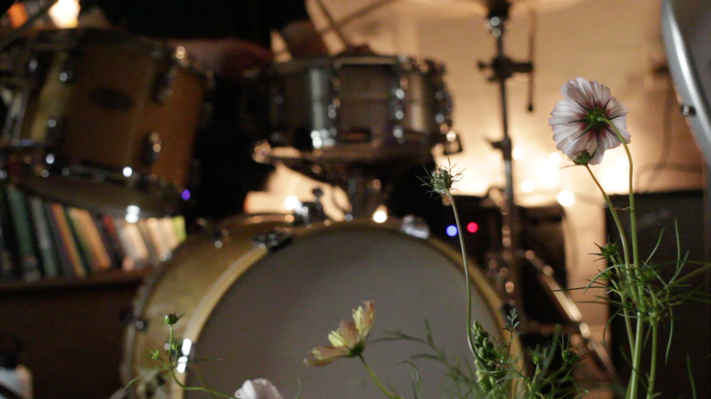

Folk Festival: Infinite Gohyang is the second annual folk festival from New Haven-based creative duo Second Floor Hardware School. The first version was a month-long residency at Havenly Café in downtown New Haven in the fall of 2022, including daily setup and takedown of paintings as well as free-create workshops, video shoots, DJ sets, dancing, and live music throughout the month. We did this because we wanted to make a festival celebrating folk traditions and spirit from our cultures. We wanted to provide dignity to the type of art the originates without adherence to rigid art world structures, to artists who may not call themselves artists, and to parts of the process that are still in progress. We wanted to collectively reject the concept that folk is only contemporary when it is white (and that if it's not, it must use old techniques in order to be authentic). Folk art and music are alive and well in the communities we are creating right now. They are extraordinary because they arise from the people, as opposed to industry or institutions, with the tools that are available around them.

❁Forager live at Folk Festival 2022, with flowers by Fairy Meadow Flowers
This year, we will bring the festivities down to three distinct but related events for the public, all at G Café on Chapel Street. Together, the events will work together to create a folk narrative that anyone can participate in: the arrival of a new, mysterious monster in our city. The theme this year is Infinite Gohyang, which means “infinite hometown,” and it is a chance for us to celebrate the town we call home as well as create a temporary home for a fictional monster friend. The project is a welcome sequel for fans from last year’s festival, and it is backed by the National Endowment for the Arts through the American Rescue Plan.
contact: jisusheen[at]gmail.com